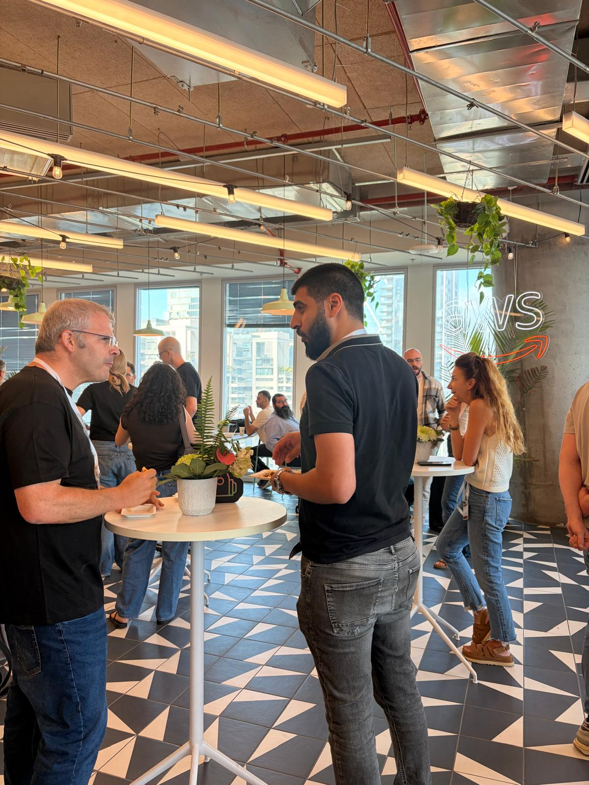
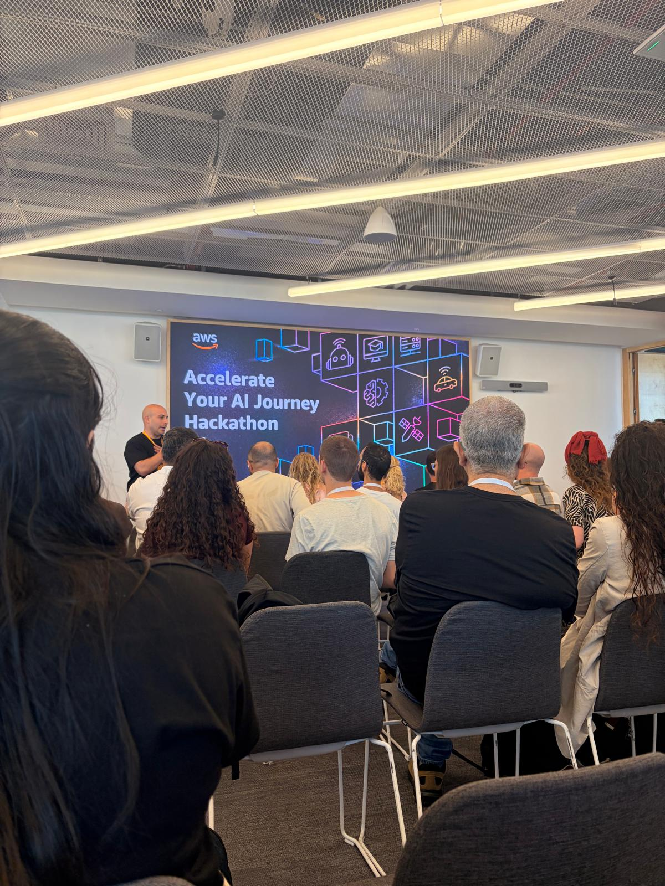
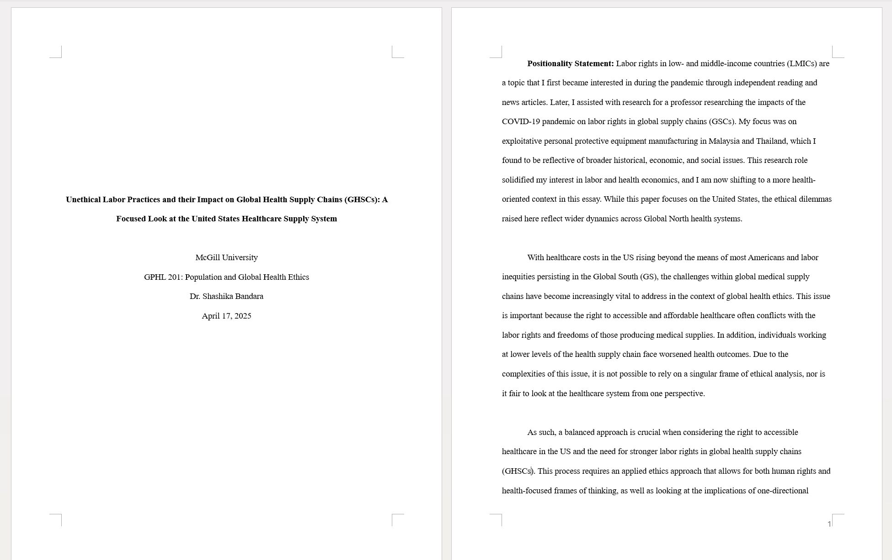
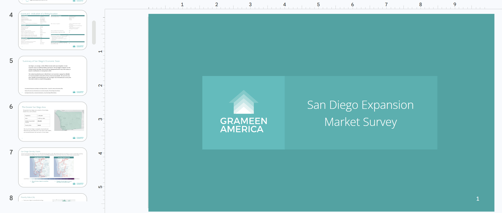

At CHEQ, I built a knowledge base and SQL retrieval queries for a client-facing AI agent using three internal databases supporting 15,000+ customers and recording 1B+ daily site interactions. I mapped undocumented relationships between tables and wrote guidance on how the agent should interpret and query the data. I also tested the agent for retrieval errors, logic issues, and restricted-data exposure.
At I-NEXT, I built AWS agent infrastructure for a clinician-scheduling prototype at Tel Aviv Sourasky Medical Center. I used Bedrock AgentCore and Docker to deploy a Strands agent and connected it to a web interface using AG-UI and CopilotKit. Working toward an AWS hackathon demo taught me to adapt when an approach wasn’t working and make use of available resources to find a workable alternative.


I worked with Prof. Hanna Lerner at Tel Aviv University on research into labor rights across global supply chains, looking at sectors including medical goods and clothing production. I reviewed academic literature and created comparative summaries and tables to examine how labor conditions differed across supply-chain stages.
(I later got to explore the subject in a global health course at McGill and wrote the paper below!)

At Grameen America, I explored San Diego as a potential location for expanding its microloan program. I used US Census and neighborhood-level data to compare areas by demographics, income, poverty, and community need, alongside research on local nonprofits and existing services. I then presented recommendations for potential branch locations and community considerations to company leadership.
